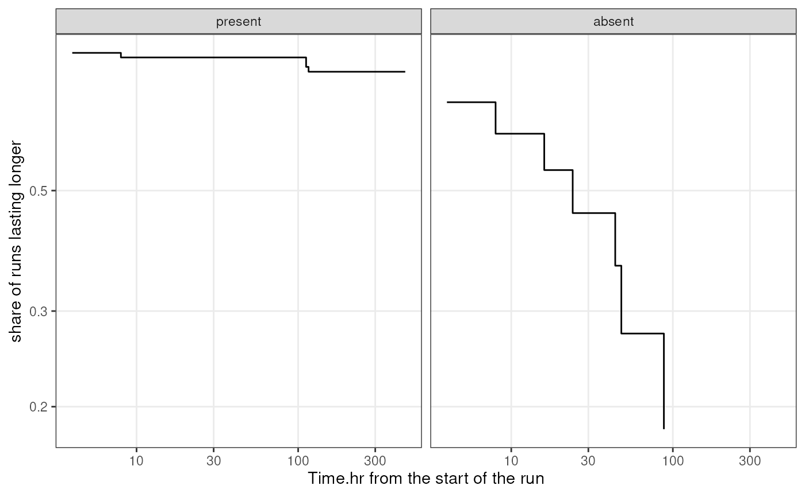
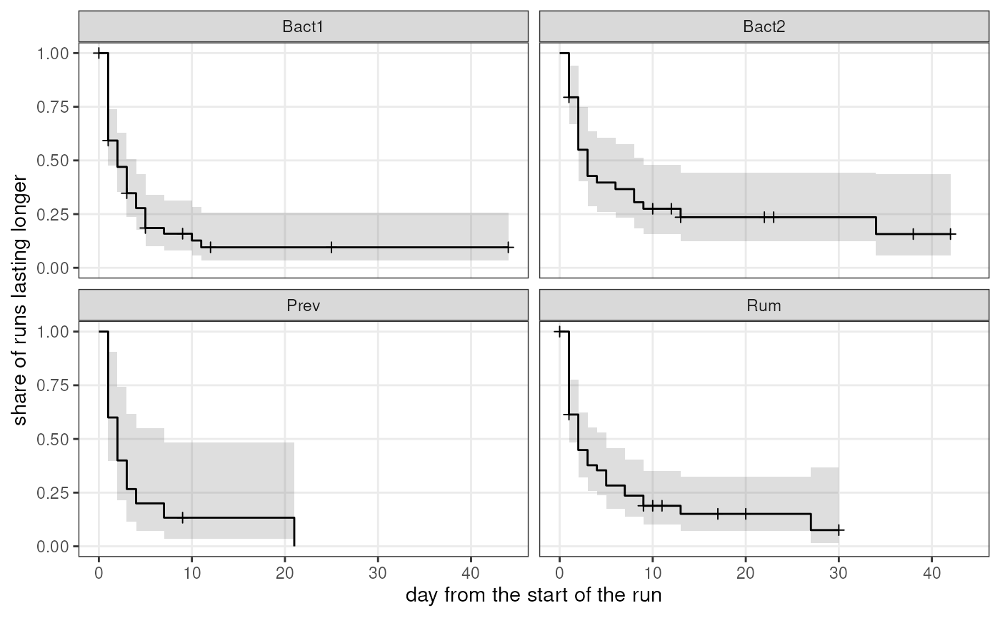

Plot how long features stay present or subjects stay in a state
Source:R/AllGenerics.R, R/plotRuns.R, R/zzz-mae.R
plotRuns.RdplotRuns() finds the runs of each subject, consecutive samples in
which a feature stays present or absent, or a state holds, and draws
the distribution of their durations as Kaplan-Meier curves, one panel
per present, absent or state.
Usage
plotRuns(x, ...)
# S4 method for class 'SummarizedExperiment'
plotRuns(
x,
time.col,
group,
state.col = NULL,
assay.type = "counts",
features = NULL,
detection = 0,
group.by = NULL,
max.gap = NULL,
layout = c("survival", "ccdf"),
...
)
# S4 method for class 'MultiAssayExperiment'
plotRuns(x, ..., experiment = 1L)Arguments
- x
a
SummarizedExperimentobject.- ...
additional arguments passed to
geom_step.- time.col
Character scalar. Specifies the column fromcolData(x)that contains sampling times: numeric,Date,POSIXctor a factor of visits.- group
Character scalar. Specifies the column fromcolData(x)that identifies subjects.- state.col
Character scalar. Specifies the column fromcolData(x)with the state of each sample, such as a community type. IfNULL, runs are of the presence and absence of features. (Default:NULL)- assay.type
Character scalar. Specifies the assay for the presence of features. (Default:"counts")- features
Character vector. Features whose runs are pooled. IfNULL, pools all features. (Default:NULL)- detection
Numeric scalar. Specifies the value above which a feature is present. (Default:0)- group.by
Character scalar. Specifies the column fromcolData(x)that splits the runs into curves, taken from the first sample of each run. (Default:NULL)- max.gap
Numeric scalar. Ends a run where consecutive samples of a subject are further apart than this, intime.colunits. For visits,NULLends runs at visits without a sample; otherwiseNULLnever ends them. (Default:NULL)- layout
Character scalar. Draws the Kaplan-Meier curves with confidence bands and censoring marks ("survival") or the same curves on log-log axes, the complementary cumulative distribution ("ccdf"). (Default:"survival")- experiment
Character scalarorinteger scalar. For aMultiAssayExperiment, the experiment to plot; its samples get thecolDataofx. (Default:1L)
Details
A run lasts from its first sample to the first sample of the next run,
the first time the change is seen, as in plotSurvival.
A run that reaches the last sample of a subject, or a gap longer than
max.gap, has no observed end: it is censored at its last sample
and marked with a cross. A run that starts at the first sample of a
subject, or after such a gap, may have begun earlier; its duration
counts from that sample. Samples without a state, or with a missing
assay value, are skipped. Durations are in time.col units: days
for Date, hours for POSIXct times and visit steps for
visits.
Runs of presence give the residence times of features and runs of
absence their return times, pooled over features. With
layout = "ccdf", the curves are drawn on log-log axes, as the
residence and return time distributions of Ji et al. (2020); runs of
length zero and the drop to zero after the longest run are not drawn.
Runs of a state give the durations of its episodes, as the dysbiotic
episodes and the intervals between them of Lloyd-Price et al. (2019).
References
Ji BW, et al. (2020). Macroecological dynamics of gut microbiota. Nature Microbiology 5(5):768-775. doi:10.1038/s41564-020-0685-1
Lloyd-Price J, et al. (2019). Multi-omics of the gut microbial ecosystem in inflammatory bowel diseases. Nature 569(7758):655-662. doi:10.1038/s41586-019-1237-9
Examples
# Residence and return times of the species in three bioreactors
data("minimalgut", package = "miaTime")
plotRuns(minimalgut, time.col = "Time.hr", group = "StudyIdentifier",
layout = "ccdf")

# Days in each enterotype, ending runs at gaps of more than 3 days.
# Samples without a cell count have the enterotype "NA".
data("temporalMicrobiome20", package = "miaTime")
tse <- temporalMicrobiome20[, !is.na(temporalMicrobiome20$day)]
tse$enterotype[tse$enterotype == "NA"] <- NA
plotRuns(tse, time.col = "day", group = "person_id",
state.col = "enterotype", max.gap = 3)
